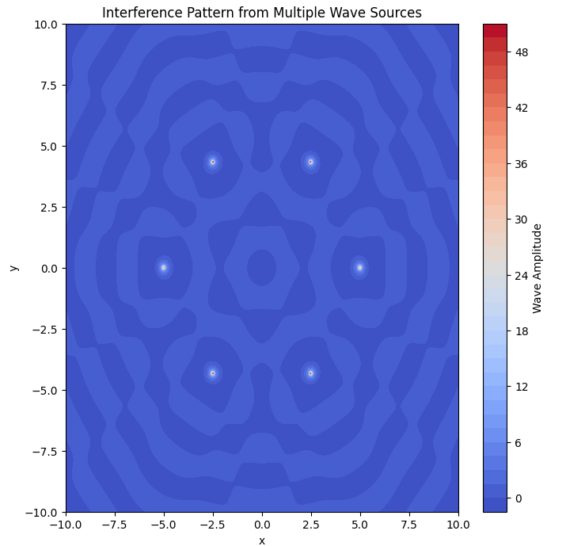

Interference Patterns on a Water Surface - Solutions
Wave Equation
The wave equation for an individual wave emitted from a point source at \( (x_0, y_0) \) is:
where:
- $ A $ is the amplitude of the wave,
- $ k = \frac{2\pi}{\lambda} $ is the wave number,
- $ \omega = 2\pi f $ is the angular frequency,
- $ r = \sqrt{(x - x_0)^2 + (y - y_0)^2} $ is the distance from the source,
- $ \phi $ is the initial phase.
If multiple sources are placed at the vertices of a regular polygon, the total displacement at any point is the sum of the contributions from all sources:
where $ N $ is the number of sources.
Python Code Simulation
 The following Python code simulates the interference pattern by summing the wave equations from multiple point sources arranged in a regular polygon.
```python import numpy as np import matplotlib.pyplot as plt
Define parameters
A = 1 # Amplitude lambda_ = 2 # Wavelength k = 2 * np.pi / lambda_ # Wave number f = 1 # Frequency omega = 2 * np.pi * f # Angular frequency N = 6 # Number of sources (hexagon) R = 5 # Radius of polygon
def wave_source(x, y, x0, y0, t): r = np.sqrt((x - x0)2 + (y - y0)2) return (A / (r + 1e-6)) * np.cos(k * r - omega * t) # Avoid division by zero
Grid definition
x = np.linspace(-10, 10, 400) y = np.linspace(-10, 10, 400) X, Y = np.meshgrid(x, y)
Define source locations
angles = np.linspace(0, 2*np.pi, N, endpoint=False) sources = [(R * np.cos(angle), R * np.sin(angle)) for angle in angles]
def total_wave(X, Y, t): wave = np.zeros_like(X) for (x0, y0) in sources: wave += wave_source(X, Y, x0, y0, t) return wave
Plot the interference pattern
time = 0 # Fixed time snapshot Z = total_wave(X, Y, time)
plt.figure(figsize=(8, 8)) plt.contourf(X, Y, Z, levels=50, cmap='coolwarm') plt.colorbar(label='Wave Amplitude') plt.title('Interference Pattern from Multiple Wave Sources') plt.xlabel('x') plt.ylabel('y') plt.show()